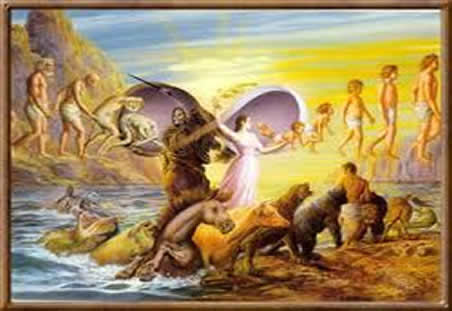
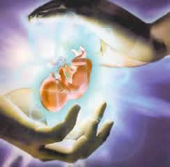
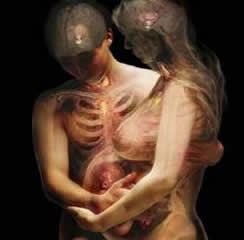
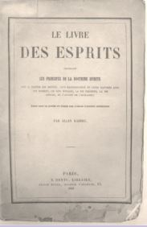
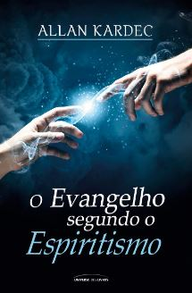
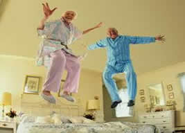
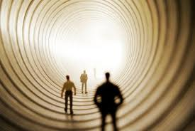

MORTE E REENCARNAÇÃO
Reencarnação é uma ideia central de diversos sistemas filosóficos e religiosos, segundo a qual uma porção do Ser é capaz de subsistir à morte do corpo. Chamada consciência, espírito ou alma, essa porção seria capaz de ligar-se sucessivamente a diversos corpos para a consecução de um fim específico, como o auto-aperfeiçoamento ou a anulação do carma.
A crença na sobrevivência da consciência após a morte é comum e tem-se mantido por toda a história da humanidade em quase todas as civilizações. Cientificamente, entretanto, inexiste qualquer motivo para sustentar ou rejeitar a hipótese.
O Minidicionário Aurélio conceitua o verbo Reencarnar da seguinte forma: "1. Reassumir (o espírito) a forma material. 2. Tornar a encarnar". Ao contrário da ressurreição, que é a volta do espírito ao mesmo corpo, a reencarnação significa o retorno do espírito a um novo corpo, sucessivamente, até alcançar a evolução.
Reencarnação na Bíblia
|  |
JOÃO 3 – Conversa de Jesus com Nicodemos
3 Jesus replicou-lhe: “Em verdade, em verdade te digo: quem não nascer de novo não poderá ver o reino de Deus.” 4 Nicodemos perguntou-lhe: “Como pode um homem renascer, sendo velho? Porventura pode tornar a entrar no seio de sua mãe e nascer pela segunda vez?” 5 Respondeu Jesus: “Em verdade, em verdade te digo: quem não renascer da água e do Espírito não poderá entrar no reino de Deus. 6 O que nasceu da carne é carne, e o que nasceu do Espírito é espírito. 7 Não te maravilhes de que eu te tenha dito: Necessário vos é nascer de novo.
Para algumas religiões esta passagem da Bíblia significa que quem não for batizado, não terá o direito de entrar no céu.
Para o espiritismo significa exatamente quem não reencarnar não conseguirá alcançar a evolução.
A tradução da frase acima é a seguinte: Mais de 70% do corpo humano é formado por água e em cada reencarnação adquirimos uma espécie de nova identidade uma renovação para o nosso espírito.
A hora de renascer
Antes de nascermos vivemos no mundo espiritual. Quando chega a hora de reencarnar nos preparamos para esta nova vida com otimismo e esperança, de que voltemos daqui mais sábios e com novos conhecimentos.
Neste momento, é estudado por quais provas da vida o espírito terá que passar para aprender tudo o que é necessário para ele evoluir. Esta escolha pode ser feita por nós mesmos e com a ajuda dos espíritos mais evoluídos. É então escolhido o país, o estado, a cidade, a família, os pais e etc. que mais se encaixam no perfil necessário para a evolução de nossas almas.
|  |  |
Por que os seres devem reencarnar?
A reencarnação é a oportunidade que temos de aperfeiçoar nossos erros e acertos, mediante a nossa experiência, construindo nosso próprio destino.
Ao longo das encarnações o espírito comete erros, aprende, reflete e tem experiências que o marcam profundamente, mas sempre com o objetivo de passar de uma ordem espiritual inferior para outra mais elevada. Com exceção dos espíritos de primeira ordem, todos os outros devem reencarnar sucessivas vezes, pois estamos em aprendizado constante.
Ao término de cada passagem terrena é possível avaliar a dimensão da evolução espiritual e, com a ajuda dos mentores e dos construtores da vida, resolver se é melhor permanecer no plano espiritual, atuando positivamente em auxílio aos encarnados, ou se seria o momento certo de voltar à Terra.
É através da vida material na terra e do esquecimento das vidas passadas que temos a oportunidade de recomeçar o caminho na jornada da evolução. E é através de convivência uns com os outros que temos a oportunidade de passar pelas mais variadas experiências que nos desafiam e incentivam a sempre progredir, a olhar para dentro de nós mesmos e assim aprender com a vida. Isso só é possível com a vivência aqui no mundo material.
Sobre a reencarnação no 'O Livro dos Espíritos' de Allan Kardec
Capítulo IV - "PLURALDADE DAS EXISTÊNCIAS"
|  |  |
I – Da Reencarnação
166. A alma que não atingiu a perfeição durante a vida corpórea como acaba de depurar-se?
— Submetendo-se à prova de uma nova existência.
166 – a) Como ela realiza essa nova existência? Pela sua transformação como Espírito?
— Ao se depurar, a alma sofre sem dúvida uma transformação, mas para isso necessita da prova da vida corpórea.
166 – b) A alma tem muitas existências corpóreas?
— Sim, todos nós temos muitas existências. Os que dizem o contrário querem manter-vos na ignorância em que eles mesmos se encontram; esse é o seu desejo.
166 – c) Parece resultar, desse princípio, que após ter deixado o corpo a alma toma outro. Dito de outra maneira, que ela se reencarna em novo corpo. É assim que se deve entender?
— É evidente.
167. Qual a finalidade da reencarnação?
— Expiação, melhoramento progressivo da Humanidade. Sem isso, onde estaria a justiça?
168. O número das existências corpóreas é limitado ou o Espírito se reencarna perpetuamente?
— A cada nova existência o Espírito dá um passo na senda do progresso: quando se despojou de todas as impurezas, não precisa mais das provas da vida corpórea.
169. O número das encarnações é o mesmo para todos os Espíritos?
— Não. Aquele que avança rapidamente se poupa das provas. Não obstante, as encarnações sucessivas são sempre muito numerosas porque o progresso é quase infinito.
170. Em que se transforma o Espírito depois de sua última encarnação?
— Espírito bem-aventurado; um Espírito puro.
Sobre pessoas que ODEIAM a ideia de reencarnação
Existem pessoas que se recusam a acreditar ou a se aprofundar na pesquisa sobre reencarnação, pois não querem ter que reencarnar na terra novamente nem por um decreto! A ideia de renascer novamente em outro corpo e ter de passar pelas expiações terrenas novamente, ou encontrar seus desafetos passados e saldar suas dívidas é apavorante demais para elas.
O que diz o Livro dos Espíritos sobre isso?
No capítulo V - "CONSIDERAÇÕES SOBRE A PLURALDADE DAS EXISTÊNCIAS", diz:
Certas pessoas repelem a ideia da reencarnação pelo único motivo de que ela não lhes convém, dizendo que lhes basta uma existência e não desejam iniciar outra semelhante. Conhecemos pessoas que, à simples idéia de voltar à terra, ficam enfurecidas. Só temos a lhes perguntar se Deus devia pedir-lhes conselho e consultar os seus gostos, para ordenar o Universo? De duas uma: a reencarnação existe ou não existe. Se existe, é inútil opor-se a ela, pois terão de sofrê-la, sem que Deus lhes peça permissão para isso. Parece-nos ouvir um doente dizer: - Já sofri hoje demais e não quero tornar a sofrer amanhã. Qualquer que seja a sua má vontade, isso não o fará sofrer menos amanhã e nos dias seguintes, até que consiga curar-se. Da mesma maneira, se essas pessoas devem reviver corporalmente, reviverão, tornarão a reencarna-se; perderão o tempo de protestar, como uma criança que não quer ir à escola ou um condenado à prisão, pois terão de passar por ela. Objeções dessa espécie são demasiado pueris para merecerem exame mais sério. Diremos, entretanto, a essas pessoas, para tranquilizá-las, que a doutrina espírita sobre a reencarnação não é tão terrível como pensam, e que se a estudassem a fundo não teriam do que se assustar. Saberiam que dessa nova existência depende delas mesmas: será feliz ou desgraçada, segundo o que tiverem feito neste plano e podem desde já elevar-se tão alto, que não mais deverão temer nova queda no lodaçal.
Sobre a morte
A morte, não é nada mais nada menos, que retornar ao plano espiritual. Ou seja, mesmo após a morte a vida continua!
A morte do corpo físico se dá quando a alma da pessoa é completamente “desligada” do corpo físico, não havendo nenhuma possibilidade ou meio após isso de o espírito retornar ao mesmo corpo.
Dependendo das atitudes e crenças de cada pessoa diante da vida, o espírito dela ao desencarnar pode passar pelos mais variados acontecimentos.
1- Ela pode morrer e não se dar conta, e continuar levando a sua vida como se estivesse viva. Até se tocar (pela falta de interação com as coisas e pessoas) que está morta.
2 -O espírito fica adormecido por horas ou até mesmo anos, até que em algum momento ele desperta, podendo ou não se dar conta de que morreu.
3 - O espírito sabe que morreu mas não quer deixar seu corpo. Ele tenta forçar um retorno mas não consegue. Mesmo no caixão o espírito tenta voltar e quando ele começa a ver e a sentir a decomposição e os vermes devorando seu corpo horrorizado ele decide abandoná-lo de vez.
4 - O espírito sabe que morreu ao ver seu corpo imóvel, neste momento os espíritos socorristas que são especializados em desligar o espírito do corpo podem estar presentes ou não para auxiliá-lo.
5 - O espírito como foi uma pessoa boa e/ou espiritualizada no momento do desencarne já desperta em mundos espirituais positivos onde se necessário recebe toda a assistência para entender e passar bem por esta fase.
6 - O espírito que acabou de desencarnar nunca pensou no que aconteceria no momento da morte, viveu a vida despreocudado com suas ações ruins tanto com o próximo quanto a si mesmo, sempre ignorou o lado espíritual da vida, e não mantinha bons pensamentos. No momento da morte ele pode tanto ficar confuso com o seu estado vagando pela terra, como pode despertar em algum plano espíritual de penitência parecido com um verdadeiro inferno onde vivem almas ruins e sofredoras.
Estes são relatos retirados de livros espirituais psicografados por médiuns, e são só alguns poucos exemplos. As mais variadas coisas podem acontecer e realmente dependem do estado de evolução espiritual de cada alma.
O fato talvez mais importante de quando retornamos ao plano espiritual é a verificação e o acerto de contas daquilo que fizemos ou deixamos de fazer em nossas vidas. Se nossa vida foi proveitosa comemoramos, mas se cometemos erros vericamos o quanto mal fizemos não só aos outros como a nós mesmos.
Então é aí que entraríamos na lei do carma, para que através de outra vida pudessemos ter a oportunidade de saldar nossas dívidas ou erros anteriores.
Por tudo isso, é preciso saber viver. Não viva a vida em vão. Faça valer a pena!
|  |
EQM - Experiência de quase morte
O que é Experiência de Quase-Morte (EQM)?
A experiência de quase-morte (EQM) é um tipo de projeção da consciência, forçada, compulsória, patológica, que decorre, geralmente, de traumas orgânicos causados por agentes físicos, químicos ou psicológicos. É comum a pacientes quase terminais, sobreviventes da morte clínica. Ocorrem em situações de perigo extremo, tais como: acidentes, intoxicação, traumatismo, choques durante anestesia, afogamento e outros casos médicos. Este fenômeno aparece em várias culturas ao longo da história da humanidade.
Que tipos de relatos são feitos por quem experimenta a EQM?
Nos relatos parece haver uma seqüência das seguintes etapas: impressão de flutuar acima do próprio corpo percebendo as pessoas ao seu redor, sensação de paz, visão panorâmica retrospectiva da própria vida, intensidade vívida de certas emoções e percepções. Pode surgir a impressão de entrar por um túnel (efeito-túnel) em cujo final surge um "ser de luz", referência variável que depende dos arquétipos religiosos, culturais ou filosóficos da pessoa. A fronteira entre as duas dimensões? física e extrafísica? é marcada como se fosse o limiar entre a vida e a morte. Estas são as descrições mais características das experiências de quase-morte / EQM.
Quais as conseqüências psicológicas sobre o comportamento de quem experimenta o fenômeno da projeção de quase-morte?
Profundas alterações comportamentais ocorrem com os indivíduos que vivenciaram a EQM: mais de 90% das pessoas que rememoram a experiência mudam para melhor, perdem o medo da morte (tanatofobia), passam a dar mais valor à própria vida com respeito à dos demais e fazem uma reperspectivação da atual existência física (reciclagem existencial). Enfim, há um grande despertamento e amadurecimento consciencial.